아빠 — 기본 common/dad/normal 확인 전


결과(왼쪽)를 첨부한 기준 그림과 비교한다: 얼굴 · 머리 · 옷 · 피부 톤 · 선 굵기 · 과장 정도. 판정은 content/mk01-butt/prompts/jobs/review.json 에 "id": "ok" 또는 "redo: 이유" 로 적는다.
common/dad/normal 확인 전common/dad/shock 확인 전
common/dad/panic 확인 전
common/dad/think 확인 전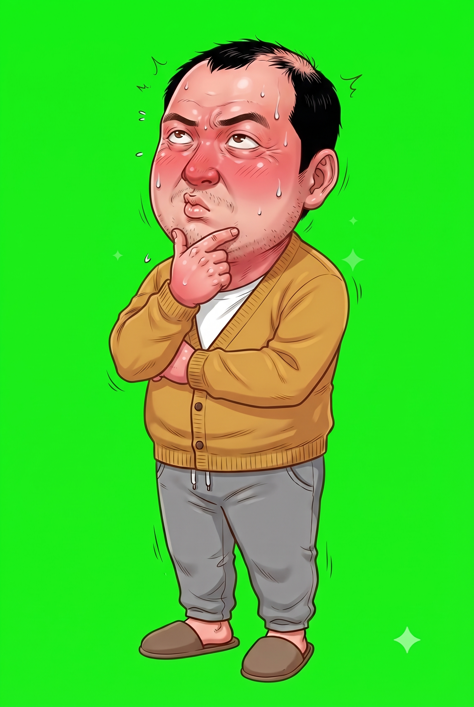
common/mom/normal 확인 전


common/mom/smirk 확인 전
common/cutin/dad-shock 확인 전
common/cutin/mom-smirk 확인 전
modeokhu/normal 확인 전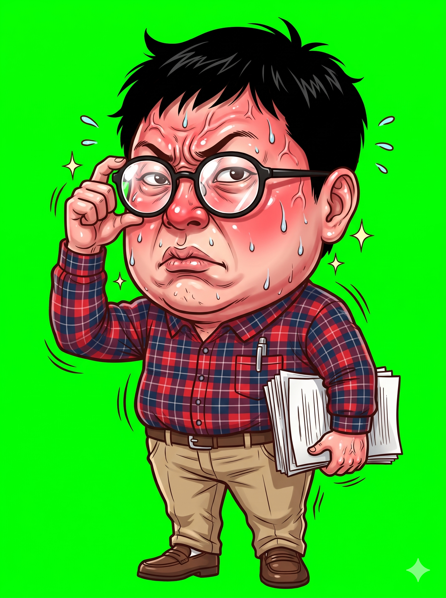
modeokhu/point 확인 전
modeokhu/proud 확인 전
cutin/uncle-glint 확인 전
bg/lecture 확인 전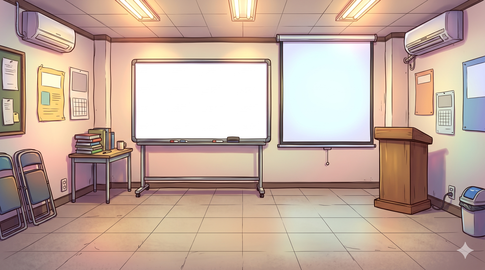
full/cover-shoot 확인 전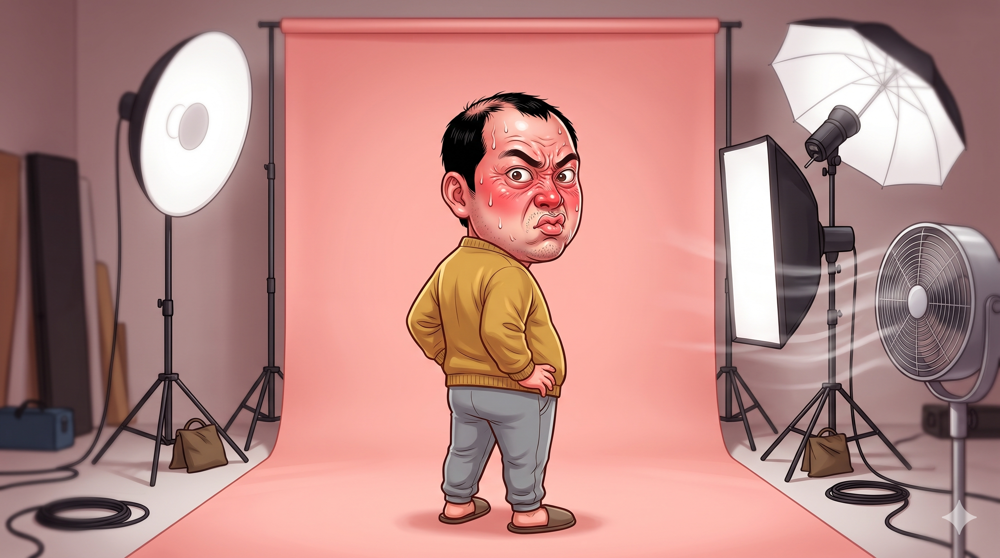
full/run-editorial 확인 전full/chimp-human 확인 전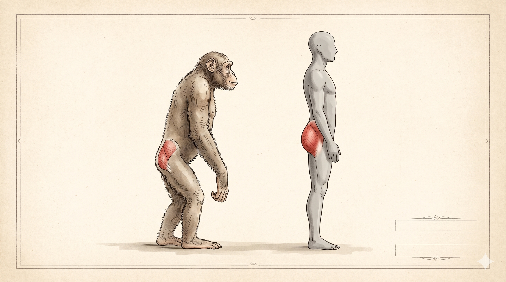
full/statue-curve 확인 전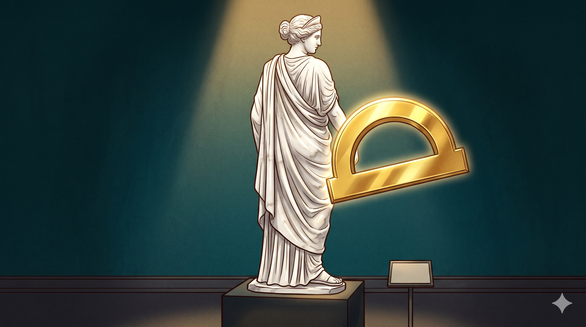
full/covers-wall 확인 전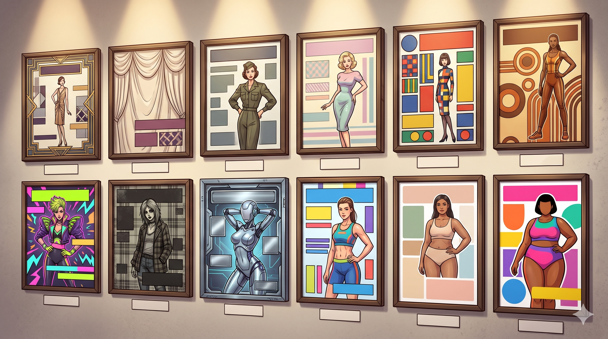
full/jeans-ad 확인 전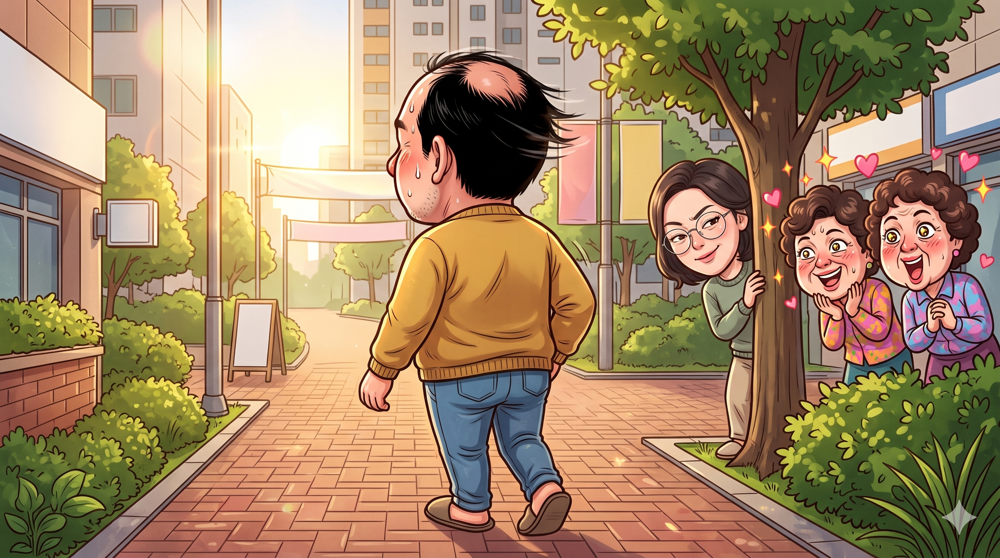
dad/cover 확인 전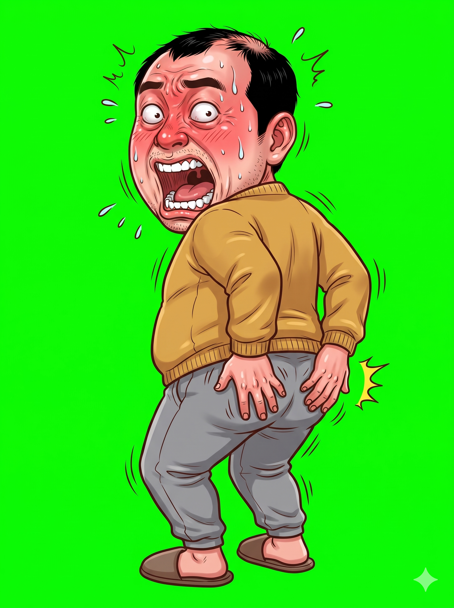
dad/run 확인 전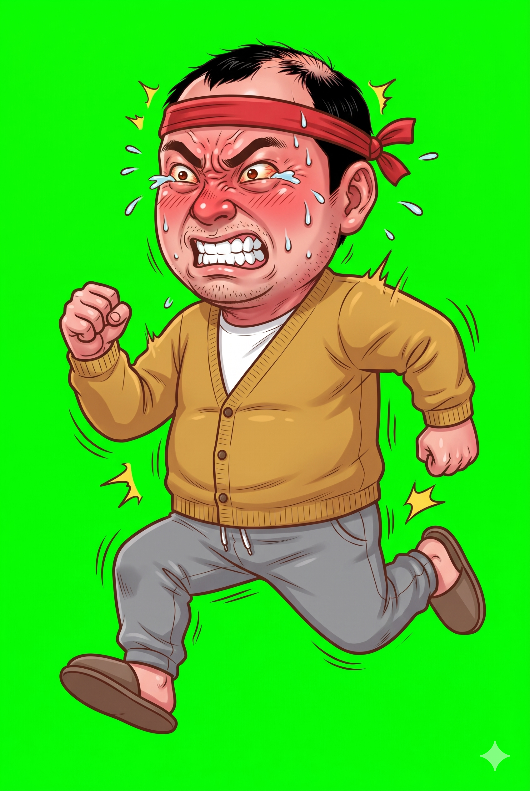
prop/peach 확인 전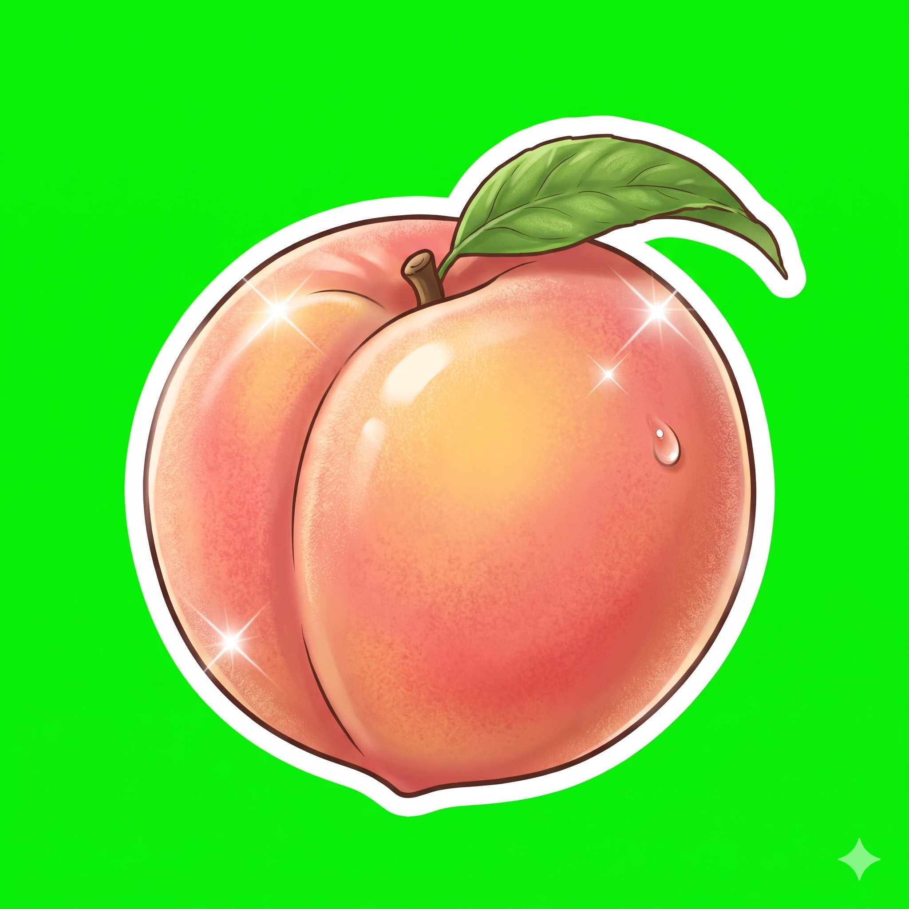